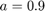
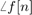

PRÁCTICA 03. Señales en tiempo discreto
Contents
Integrantes
- Cuevas Morales Saúl Asís
- Gonzalez Zúñiga Alexis Bryan
- Méndez Pallares Josué
- Vallejo Camarillo Moisés Eduardo
Objetivos
- Manipulación básica de MATLAB.
- Gráficas de señales reales y complejas discretas.
- Transformación de señales discretas (escalamientos y traslaciones).
- Cálculo de energía y potencia de señales discretas.
Introducción
El escalamiento horizontal de señales en tiempo discreto se puede definir como los alargamientos y encogimientos que sufre una función cuando se realiza una multiplicación o división a la variable que esta señal maneje. Si la variable sufre una multiplicación la función se encogerá, transportando todos los puntos en x al punto resultante de la división entre el punto inicial con el numero deseado; cabe remarcar que solo aquellas que den como resultado un numero entero son las que serán graficadas en la función resultante. En el caso que se realice una división la función se alargará, transportando todos los puntos en x al punto resultante del producto entre el punto inicial con el numero deseado y en el caso que se haga una multiplicación o división con un numero negativo, la función se invertirá con respecto al eje de las x & posteriormente se realizará el respectivo encogimiento o alargamiento.
Ejemplos:
Si se tiene la señal en tiempo discreto, definida de la sig. manera:
n=-12:1:12; fun= @(n) (n.*(heaviside(n)-heaviside(n-3)))+(3.*(heaviside(n-3)-heaviside(n-5))); stem(n,fun(n));
- Para que tenga un escalamiento en el cual se comprima a la mitad, obtenemos:
n1=2.*n fun= @(n1) (n1.*(heaviside(n1)-heaviside(n1-3)))+(3.*(heaviside(n1-3)-heaviside(n1-5))); stem(n,fun(n1));
Lo cual también podría representarse de la siguiente forma:
fun= @(n) (n.*(heaviside(n)-heaviside(n-3)))+(3.*(heaviside(n-3)-heaviside(n-5))); stem(n,fun(2*n));
- Si queremos una señal invertida de esta misma señal se procedería de la sig. manera:
n2=-n fun= @(n2) (n2.*(heaviside(n2)-heaviside(n2-3)))+(3.*(heaviside(n2-3)-heaviside(n2-5))); stem(n,fun(n2));
Que también podría ser representado como:
fun= @(n) (n.*(heaviside(n)-heaviside(n-3)))+(3.*(heaviside(n-3)-heaviside(n-5))); stem(n,fun(-n));
- Para un alargamiento de la señal, procedemos con el siguiente código:
n3=n./2 fun= @(n3) (n3.*(heaviside(n3)-heaviside(n3-3)))+(3.*(heaviside(n3-3)-heaviside(n3-5))); stem(n,fun(n3));
Este escalamiento también se puede representar de la sig. manera:
fun= @(n) (n.*(heaviside(n)-heaviside(n-3)))+(3.*(heaviside(n-3)-heaviside(n-5))); stem(n,fun(n/2))
- Por último si queremos un escalamiento con inversión de la señal, se puede hacer lo siguiente.
% Declaramos a n4=-n/2; o bien lo podemos declarar como n4=n2/2. n4=-n/2; % y después evaluamos con n4 en la función. fun= @(n4) (n4.*(heaviside(n4)-heaviside(n4-3)))+(3.*(heaviside(n4-3)-heaviside(n4-5))); stem(n,fun(n4))
También podemos representar el escalamiento anterior de la sig. forma:
fun= @(n) (n.*(heaviside(n)-heaviside(n-3)))+(3.*(heaviside(n-3)-heaviside(n-5))); stem(n,fun(-n/2))
Desarrollo
Problema 1. Crea una función que se llame fun1 y reciba dos parametros y la función debe regresar la evaluación , esta función debe trabajar con , y .
function [ fn ] = fun1( r, omg, n ) fn= r.^(n).*cos(omg.*n) + r.^(n).*sin(omg.*n).*1j; return end
Problema 2. Construya una función que gráfique funciones de en el formato de su elección y pruebe su código mostrando la gráfica de vs para para .
F= @(a,n) n.*(a.^n).*heaviside(n); m=-2:1:10; Graphics(F,.9,m)
Problema 3. Construya una función que gráfique funciones de en el formato de su elección y pruebe su código mostrando la gráfica de la función exponencial del primer problema, no debe incluir el código, solo el uso de la función para mostrarla gráfica. Reporte la gráfica de para , y . Reporte la gráfica de vs y  vs .
r=1.1; omg=0.5; n=-2:1:20; grafica(r,omg,n);

Problema 4. Programe una función que calcule la energía de una señal en tiempo discreto la fucion se debe llamar energiadis. La función recibe dos paramétros de entrada: el vector de tiempo y las alturas asignadas. La función regresa la energia de la señal y despliega la gráfica de la señal.
function energiadis(t, h) A=h.^2; sum(A) stem(t,h) grid on; end
Problema 5. Encuentra la energía de la señal mostrada en la sig. figura.
n1=-3:3; x1=@(n1) n1; figure stem(n1,x1(n1)) grid on; xlabel('n1'); ylabel('x1[n1]'); title('Señal c)')
Cálculo de la energía.
n=[-3:1:3]; %vector del tiempo discreto a=[-9,-6,-3,0,3,6,9]; %vector de alturas energiadis(n,a) %cálculo de la energía por medio de la función energiadis
ans = 252
Problema 6. Para la señal mostrada en la fig., graficar las sig. señales:
n=-8:18; fun= @(n) (n.*(heaviside(n)-heaviside(n-3)))+((6-n).*(heaviside(n-3)-heaviside(n-6))); figure stem(n,fun(n)); grid on; xlabel('n'); ylabel('x[n]'); title('Señal Lathi 3.2.3')
a) x[-n]
b) x[n+6]
c) x[n-6]
d) x[3n]
e) x[n/3]
f) x[3-n]
n=-8:18; fun= @(n) (n.*(heaviside(n)-heaviside(n-3)))+((6-n).*(heaviside(n-3)-heaviside(n-6))); P323(fun, n);
Apéndices
Función Graphics utilizada en el Problema 2.
function Graphics(fun, a, n) stem(n, fun(a,n)) grid on; end
Función grafica utilizada para resolver el Problema 3.
function [] = grafica(r,omg,n) g=fun1(r,omg,n); %se hace uso de fun1 creada anteriormente img= imag(g); %componente real de cada elemento de g re= real(g); %componente imaginario de cada elemento de g
%gráfica de n vs real vs imaginario figure1 = figure; axes1 = axes('Parent',figure1); view(axes1,[-37.5 30]); grid(axes1,'on'); hold(axes1,'on'); stem3(n,re,img,... 'Color',[0.105882354080677 0.309803932905197 0.207843139767647]); xlabel('n'); ylabel('real'); zlabel('imaginario'); title('\rmf : N \rightarrow R^2');
%gráfica de f[n] vs n figure2 = figure; axes1 = axes('Parent',figure2,... 'Position',[0.129155405405405 0.11 0.775 0.815]); box(axes1,'on'); grid(axes1,'on'); hold(axes1,'on'); stem(n,abs(g),'LineWidth',1,'Color',[1 0 1]); xlabel('n'); ylabel('\rm\mid\it f[n] \rm\mid'); title('\rm\mid\it f[n] \rm\mid vs \itn');
%gráfica del ángulo de desfase vs n usando angle figure3 = figure; axes1 = axes('Parent',figure3); hold(axes1,'on'); stem(n,angle(g),'LineWidth',1,... 'Color',[0.929411768913269 0.694117665290833 0.125490203499794]); ylabel('\anglef[n]'); xlabel('n'); title('\rm\angle \itf[n]\rm vs \itn\rm usando angle'); box(axes1,'on'); grid(axes1,'on');
%gráfica del ángulo de desfase vs n usando atan2 figure4 = figure; axes1 = axes('Parent',figure4); hold(axes1,'on'); stem(n,atan2(img,re),'LineWidth',1,... 'Color',[0.929411768913269 0.694117665290833 0.125490203499794]); ylabel('\anglef[n]'); xlabel('n'); title('\rm\angle \itf[n]\rm vs \itn\rm usando atan2'); box(axes1,'on'); grid(axes1,'on'); end
Función P323 utilizada para resolver el Problema 6.
function P323(fun, n) % Se resuelve el inciso a). subplot(2,3,1) stem(n, fun(-n)); title('Lathi 3.2.3 inciso a)') xlabel('n'); ylabel('f[-n]'); grid;
% Se resuelve el inciso b). subplot(2,3,2) stem(n, fun(n+6)); title('Lathi 3.2.3 inciso b)') xlabel('n'); ylabel('f[n+6]'); grid;
% Se resuelve el inciso c). subplot(2,3,3) stem(n, fun(n-6)); title('Lathi 3.2.3 inciso c)') xlabel('n'); ylabel('f[n-6]'); grid;
% Se resuelve el inciso d). subplot(2,3,4) stem(n, fun(3*n)); title('Lathi 3.2.3 inciso d)') xlabel('n'); ylabel('f[3n]'); grid;
% Se resuelve el inciso e). subplot(2,3,5) stem(n, fun(n/3)); title('Lathi 3.2.3 inciso e)') xlabel('n'); ylabel('f[n/3]'); grid;
% Se resuelve el inciso f). subplot(2,3,6) stem(n, fun(3-n)); title('Lathi 3.2.3 inciso f)') xlabel('n'); ylabel('f[3-n]'); grid; end
Referencias
- B. P. Lathi. (2005). Linear Systems and Signals. 198 Madison Avenue, New York, New York 10016: Oxford University Press.
- Martínez, R. [Mate y así] (2018, Agosto 17) "Escalamiento horizontal de señales en tiempo discreto (6)". Recuperado de: https://www.youtube.com/watch?v=lpFU5D7oY1w&feature=youtu.be
- H. P. Hsu. (1995). Signals and systems. Recuperado de: http://s1.nonlinear.ir/epublish/book/Schaums_Outline_Of_Theory_and_Problems_of_Signals_and_Systems_0071829466.pdf
- MathWorks. Subplot: Create axes in tiled positions. Recuperado de: https://www.mathworks.com/help/matlab/ref/subplot.html